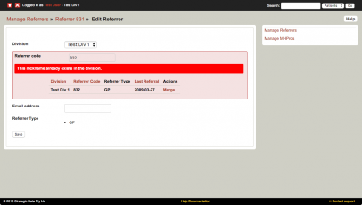
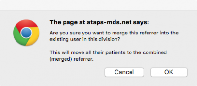
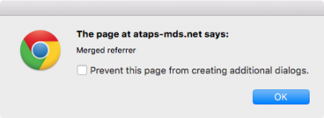

To manage referrers or MHPros, click the either the 'Manage Referrers' or 'Manage MHPros' link in the box on the right on the Home page.
On the Manage Referrers/MHPros page, click on the "List all referrers/MHPros" link to view a list of all referrers/MHPros & their associated details.
From the list, you can edit any of the referrers/MHPros by clicking on their "Edit" link.
You can also search for a specific referrer/MHPro instead of simply viewing the list. Use the search field on the Manage Referrers/MHPros page.
To create a new referrer or MHPro, click the "Create new referrer/MHPro" link on the Manage Referrers/MHPros page. Complete the subsequent form and click "Save".
Here you will also find a "Create details" button at the top of the screen which is used to enter details about the Mental Health Professional data.
To 'Delete' a 'Referrer' or 'MHPro' code, locate the code as per the instructions above (by using the 'search' box or the 'list referrers' or 'list MHPros'). Referrer and MHPro codes can only be deleted if they do not appear in any associated records.
To delete the referrer or MHPro code, click on 'delete' under the 'Actions' column in the search results. As illustrated above, the 'delete' option will only appear if the referrer has never referred a patient. The same applies to MHPro codes (i.e., you can only delete these codes if they have never provided a patient session in the MDS).
To merge a referrer/MHPro, locate the code that you do not wish to keep as per the instructions above (by using the 'Search' box or the 'list referrers' or 'list MHPros').
When the referrer is found, click 'Edit'.
In the 'Referrer code' box, type in the code of the referrer that you want this to become. Click 'Save'.

The system will detect that the code already exists and give you the option of merging them. Click 'Merge'.
A dialogue box will display confirming the merge.

Click 'OK'.
The two referrers will now be merged into one.

{kind=link}
{kind=link}
{kind=link}
{kind=link}
{kind=link}
{kind=link}